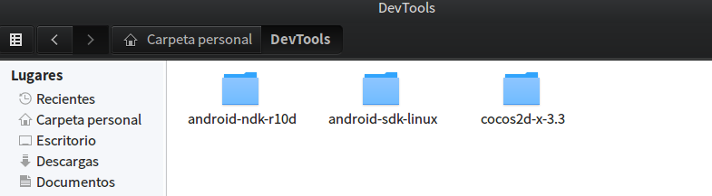
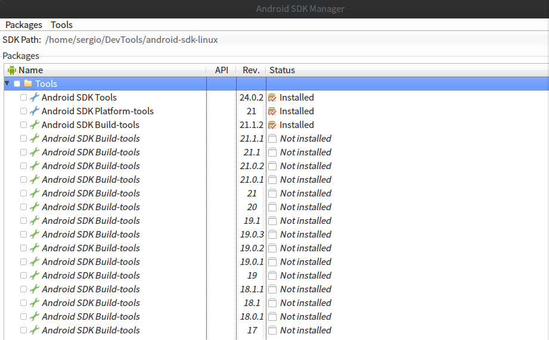
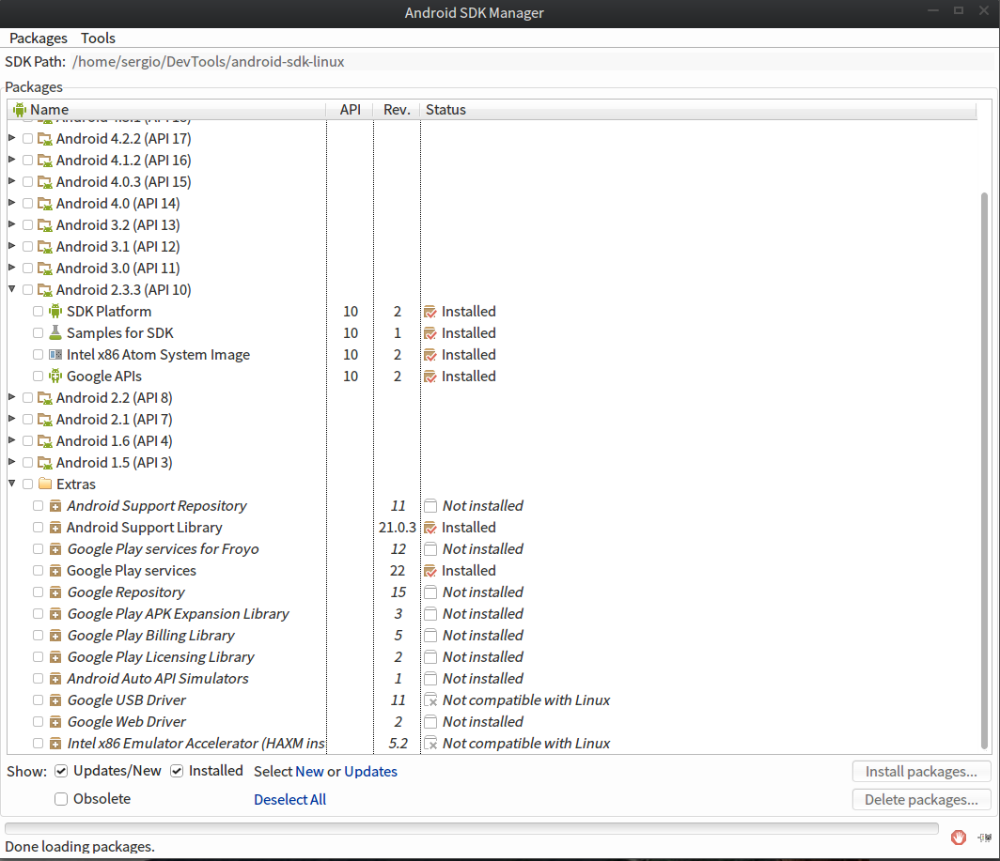
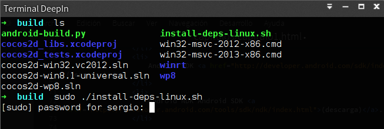
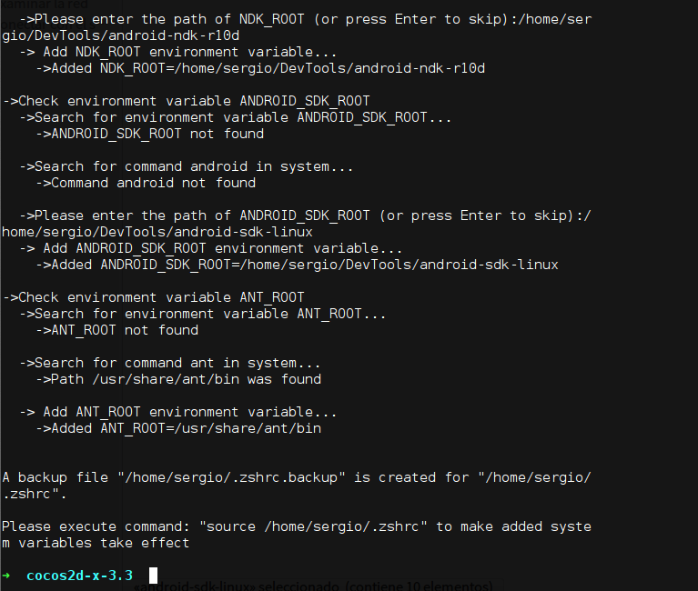
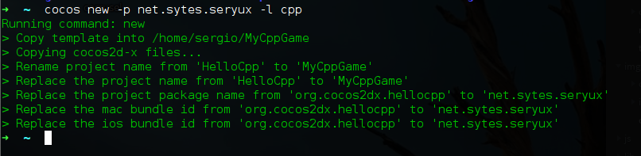

Introducción
En este capitulo vamos a hacer el set up de nuestro entorno de trabajo. Para desarrollar aplicaciones en cocos2d yo utilizare un ubuntu 14.04 y los IDEs: Qt creator y eclipse. Para mayor comodida todos los tutoriales se realizaran utilizando Qt creator en la plataforama linux y finalmente se mostrará como compilar y lanzar la aplicación resultante en android desde eclipse además de una pequeña introduccion a llamadas de metodos java desde c++ vía JNDI para poder hacer uso de servicios especificos de la plataforma android.
Manos a la obra
Comenzaremos descargando todo lo neceserao para empezar a utilizar cocos2d.
- Cocos2d-x v3.x (descarga).
- Ant (sudo apt-get install ant).
- Java JDK (descarga).
- Android SDK (descarga).
- Android NDK Android SDK (descarga).
- Python 2.x (viene con la distribución de Ubuntu).
Al instalar ant se nos intalará automaticamente el open jdk así que asegurate que despues de instalar el jdk de oracle, tienes este por defecto.

Una vez tenemos descargado cocos2d-x, instalado ant y el jdk. Nos descargamos el sdk y el ndk de android, lo descomprimimos siguiendo las instrucciones que google da en su pagina web. Finalmente metemos todo a un directorio para tener todas las herramientas organizadas.

A contuniación iniciamos el sdk manager que se encuentra en android-sdk-linuz > tools > android.sh e instalamos lo que vemos en las imagenes a continuación.

Además de los platform tools, necesitamos la api 10 de android. Pues cocos es compatible con android 2.3 al usar la version 2 de openglES, de forma optativa se pueden descargar los google play services.

Ahora que ya tenemos todos los componentes, descargaremos las dependencias de cocos. Asegurate de tener las herramientas de desarrollador esenciales sudo apt-get install build-essential -y y tras instalarlas, instala las dependencias. Posteriormente configuraremos cocos.
Para descargar las dependencias necesarias y que cocos funciones basta con ejecutar el script que encontraremos en cocos2d-x-3.3 > build > install-deps-linux.sh. Una vez finalizado el proceso, comenzamos la configuración de cocos.

Para finalizar vamos a la carpeta cocos2d-x-3.3 y ejecutapos el script setup.py que nos pedirá la dirección donde se encuentra tanto el sdk como el ndk.

Tras decirle donde se encuetran dichos cirectorios ejecutamos el comando que nos indica al final de la ejecución del script, este comando recarga las variables de entorno así que tambien sirve si reinicias tu equipo. Ahora vamos a probar ue todo funciona correctamente. Crearemos un proyecto en cocos2d y lo lnzaemos para androed y linux.
Escrbe en tu terminal: cd y ve a tu carpeta home, a continuación crearemos el proyecto. Escibe: cocos new -p <tu nombre de paquete para android> -l cpp. Con el flag -p indicas el package y con -l el lenguaje del proyecto usaremos cpp para indicar que será en C++
